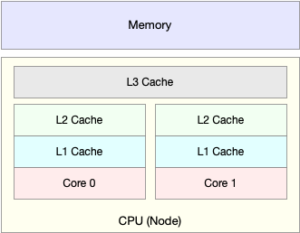
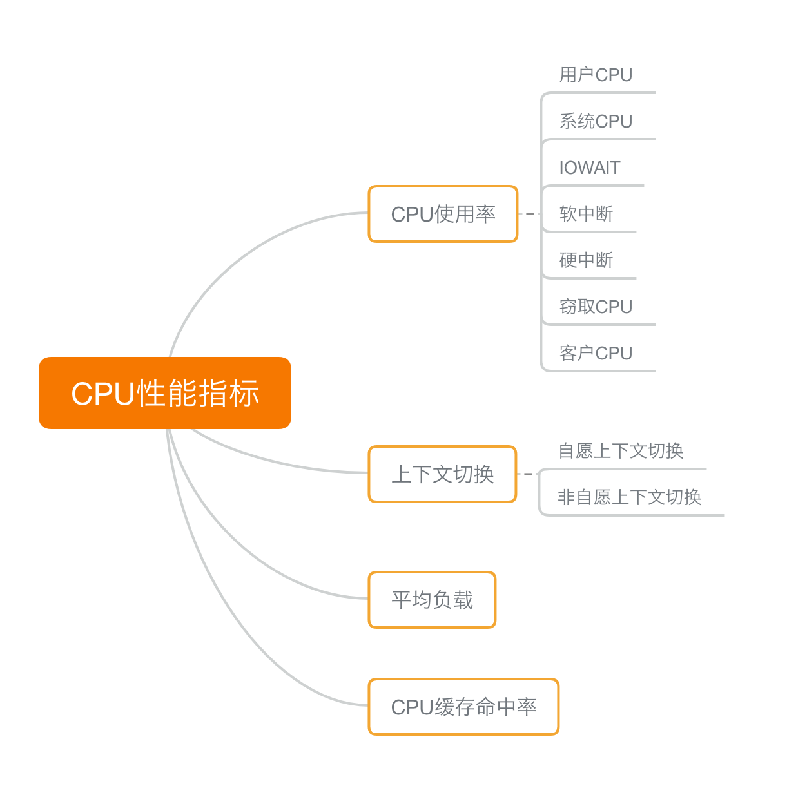
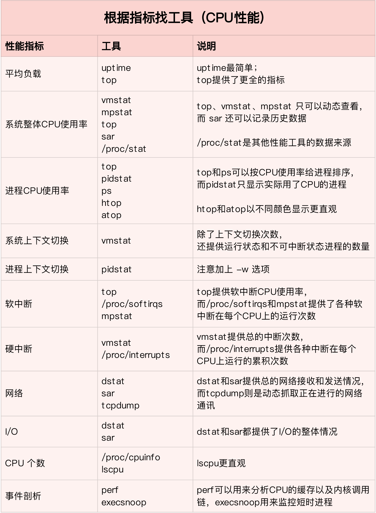
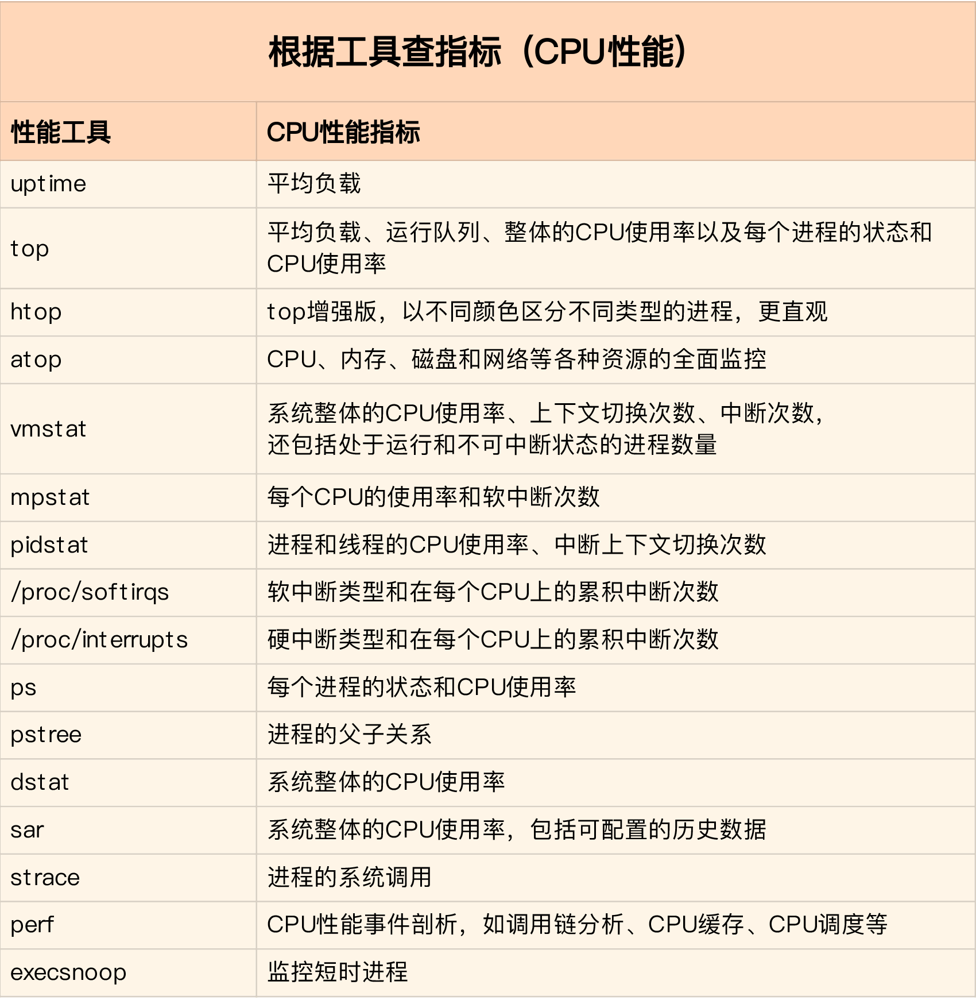
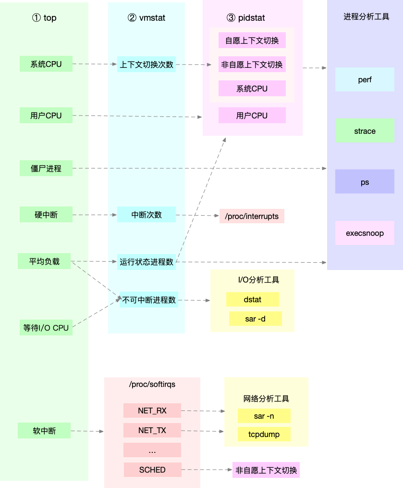

- 00 开篇词 别再让Linux性能问题成为你的绊脚石.md.html
- 01 如何学习Linux性能优化？.md.html
- 02 基础篇：到底应该怎么理解“平均负载”？.md.html
- 03 基础篇：经常说的 CPU 上下文切换是什么意思？（上）.md.html
- 04 基础篇：经常说的 CPU 上下文切换是什么意思？（下）.md.html
- 05 基础篇：某个应用的CPU使用率居然达到100%，我该怎么办？.md.html
- 06 案例篇：系统的 CPU 使用率很高，但为啥却找不到高 CPU 的应用？.md.html
- 07 案例篇：系统中出现大量不可中断进程和僵尸进程怎么办？（上）.md.html
- 08 案例篇：系统中出现大量不可中断进程和僵尸进程怎么办？（下）.md.html
- 09 基础篇：怎么理解Linux软中断？.md.html
- 10 案例篇：系统的软中断CPU使用率升高，我该怎么办？.md.html
- 11 套路篇：如何迅速分析出系统CPU的瓶颈在哪里？.md.html
- 12 套路篇：CPU 性能优化的几个思路.md.html
- 13 答疑（一）：无法模拟出 RES 中断的问题，怎么办？.md.html
- 14 答疑（二）：如何用perf工具分析Java程序？.md.html
- 15 基础篇：Linux内存是怎么工作的？.md.html
- 16 基础篇：怎么理解内存中的Buffer和Cache？.md.html
- 17 案例篇：如何利用系统缓存优化程序的运行效率？.md.html
- 18 案例篇：内存泄漏了，我该如何定位和处理？.md.html
- 19 案例篇：为什么系统的Swap变高了（上）.md.html
- 20 案例篇：为什么系统的Swap变高了？（下）.md.html
- 21 套路篇：如何“快准狠”找到系统内存的问题？.md.html
- 22 答疑（三）：文件系统与磁盘的区别是什么？.md.html
- 23 基础篇：Linux 文件系统是怎么工作的？.md.html
- 24 基础篇：Linux 磁盘I_O是怎么工作的（上）.md.html
- 25 基础篇：Linux 磁盘I_O是怎么工作的（下）.md.html
- 26 案例篇：如何找出狂打日志的“内鬼”？.md.html
- 27 案例篇：为什么我的磁盘I_O延迟很高？.md.html
- 28 案例篇：一个SQL查询要15秒，这是怎么回事？.md.html
- 29 案例篇：Redis响应严重延迟，如何解决？.md.html
- 30 套路篇：如何迅速分析出系统I_O的瓶颈在哪里？.md.html
- 31 套路篇：磁盘 I_O 性能优化的几个思路.md.html
- 32 答疑（四）：阻塞、非阻塞 I_O 与同步、异步 I_O 的区别和联系.md.html
- 33 关于 Linux 网络，你必须知道这些（上）.md.html
- 34 关于 Linux 网络，你必须知道这些（下）.md.html
- 35 基础篇：C10K 和 C1000K 回顾.md.html
- 36 套路篇：怎么评估系统的网络性能？.md.html
- 37 案例篇：DNS 解析时快时慢，我该怎么办？.md.html
- 38 案例篇：怎么使用 tcpdump 和 Wireshark 分析网络流量？.md.html
- 39 案例篇：怎么缓解 DDoS 攻击带来的性能下降问题？.md.html
- 40 案例篇：网络请求延迟变大了，我该怎么办？.md.html
- 41 案例篇：如何优化 NAT 性能？（上）.md.html
- 42 案例篇：如何优化 NAT 性能？（下）.md.html
- 43 套路篇：网络性能优化的几个思路（上）.md.html
- 44 套路篇：网络性能优化的几个思路（下）.md.html
- 45 答疑（五）：网络收发过程中，缓冲区位置在哪里？.md.html
- 46 案例篇：为什么应用容器化后，启动慢了很多？.md.html
- 47 案例篇：服务器总是时不时丢包，我该怎么办？（上）.md.html
- 48 案例篇：服务器总是时不时丢包，我该怎么办？（下）.md.html
- 49 案例篇：内核线程 CPU 利用率太高，我该怎么办？.md.html
- 50 案例篇：动态追踪怎么用？（上）.md.html
- 51 案例篇：动态追踪怎么用？（下）.md.html
- 52 案例篇：服务吞吐量下降很厉害，怎么分析？.md.html
- 53 套路篇：系统监控的综合思路.md.html
- 54 套路篇：应用监控的一般思路.md.html
- 55 套路篇：分析性能问题的一般步骤.md.html
- 56 套路篇：优化性能问题的一般方法.md.html
- 57 套路篇：Linux 性能工具速查.md.html
- 58 答疑（六）：容器冷启动如何性能分析？.md.html
- 加餐（一） 书单推荐：性能优化和Linux 系统原理.md.html
- 加餐（二） 书单推荐：网络原理和 Linux 内核实现.md.html
- 用户故事 “半路出家 ”，也要顺利拿下性能优化！.md.html
- 用户故事 运维和开发工程师们怎么说？.md.html
- 结束语 愿你攻克性能难关.md.html
- 捐赠
11 套路篇：如何迅速分析出系统CPU的瓶颈在哪里？
你好，我是倪朋飞。
前几节里，我通过几个案例，带你分析了各种常见的 CPU 性能问题。通过这些，我相信你对 CPU 的性能分析已经不再陌生和恐惧，起码有了基本的思路，也了解了不少 CPU 性能的分析工具。
不过，我猜你可能也碰到了一个我曾有过的困惑： CPU 的性能指标那么多，CPU 性能分析工具也是一抓一大把，如果离开专栏，换成实际的工作场景，我又该观察什么指标、选择哪个性能工具呢？
不要担心，今天我就以多年的性能优化经验，给你总结出一个“又快又准”的瓶颈定位套路，告诉你在不同场景下，指标工具怎么选，性能瓶颈怎么找。
CPU 性能指标
我们先来回顾下，描述 CPU 的性能指标都有哪些。你可以自己先找张纸，凭着记忆写一写；或者打开前面的文章，自己总结一下。
首先，最容易想到的应该是 CPU 使用率，这也是实际环境中最常见的一个性能指标。
CPU 使用率描述了非空闲时间占总 CPU 时间的百分比，根据 CPU 上运行任务的不同，又被分为用户CPU、系统CPU、等待I/O CPU、软中断和硬中断等。
用户 CPU 使用率，包括用户态 CPU 使用率（user）和低优先级用户态 CPU 使用率（nice），表示 CPU 在用户态运行的时间百分比。用户 CPU 使用率高，通常说明有应用程序比较繁忙。
系统 CPU 使用率，表示 CPU 在内核态运行的时间百分比（不包括中断）。系统 CPU 使用率高，说明内核比较繁忙。
等待 I/O 的CPU使用率，通常也称为iowait，表示等待 I/O 的时间百分比。iowait 高，通常说明系统与硬件设备的 I/O 交互时间比较长。
软中断和硬中断的 CPU 使用率，分别表示内核调用软中断处理程序、硬中断处理程序的时间百分比。它们的使用率高，通常说明系统发生了大量的中断。
除了上面这些，还有在虚拟化环境中会用到的窃取 CPU 使用率（steal）和客户 CPU 使用率（guest），分别表示被其他虚拟机占用的 CPU 时间百分比，和运行客户虚拟机的 CPU 时间百分比。
第二个比较容易想到的，应该是平均负载（Load Average），也就是系统的平均活跃进程数。它反应了系统的整体负载情况，主要包括三个数值，分别指过去1分钟、过去5分钟和过去15分钟的平均负载。
理想情况下，平均负载等于逻辑 CPU 个数，这表示每个 CPU 都恰好被充分利用。如果平均负载大于逻辑CPU个数，就表示负载比较重了。
第三个，也是在专栏学习前你估计不太会注意到的，进程上下文切换，包括：
无法获取资源而导致的自愿上下文切换；
被系统强制调度导致的非自愿上下文切换。
上下文切换，本身是保证 Linux 正常运行的一项核心功能。但过多的上下文切换，会将原本运行进程的 CPU 时间，消耗在寄存器、内核栈以及虚拟内存等数据的保存和恢复上，缩短进程真正运行的时间，成为性能瓶颈。
除了上面几种，还有一个指标，CPU缓存的命中率。由于CPU发展的速度远快于内存的发展，CPU的处理速度就比内存的访问速度快得多。这样，CPU在访问内存的时候，免不了要等待内存的响应。为了协调这两者巨大的性能差距，CPU缓存（通常是多级缓存）就出现了。

就像上面这张图显示的，CPU缓存的速度介于CPU和内存之间，缓存的是热点的内存数据。根据不断增长的热点数据，这些缓存按照大小不同分为 L1、L2、L3 等三级缓存，其中 L1 和 L2 常用在单核中， L3 则用在多核中。
从 L1 到 L3，三级缓存的大小依次增大，相应的，性能依次降低（当然比内存还是好得多）。而它们的命中率，衡量的是CPU缓存的复用情况，命中率越高，则表示性能越好。
这些指标都很有用，需要我们熟练掌握，所以我总结成了一张图，帮你分类和记忆。你可以保存打印下来，随时查看复习，也可以当成CPU性能分析的“指标筛选”清单。

性能工具
掌握了 CPU 的性能指标，我们还需要知道，怎样去获取这些指标，也就是工具的使用。
你还记得前面案例都用了哪些工具吗？这里我们也一起回顾一下CPU性能工具。
首先，平均负载的案例。我们先用 uptime， 查看了系统的平均负载；而在平均负载升高后，又用 mpstat 和 pidstat ，分别观察了每个 CPU 和每个进程 CPU 的使用情况，进而找出了导致平均负载升高的进程，也就是我们的压测工具 stress。
第二个，上下文切换的案例。我们先用 vmstat ，查看了系统的上下文切换次数和中断次数；然后通过 pidstat ，观察了进程的自愿上下文切换和非自愿上下文切换情况；最后通过 pidstat ，观察了线程的上下文切换情况，找出了上下文切换次数增多的根源，也就是我们的基准测试工具 sysbench。
第三个，进程 CPU 使用率升高的案例。我们先用 top ，查看了系统和进程的CPU使用情况，发现 CPU 使用率升高的进程是 php-fpm；再用 perf top ，观察 php-fpm 的调用链，最终找出 CPU 升高的根源，也就是库函数 sqrt() 。
第四个，系统的 CPU 使用率升高的案例。我们先用 top 观察到了系统CPU升高，但通过 top 和 pidstat ，却找不出高 CPU 使用率的进程。于是，我们重新审视 top 的输出，又从 CPU 使用率不高但处于 Running 状态的进程入手，找出了可疑之处，最终通过 perf record 和 perf report ，发现原来是短时进程在捣鬼。
另外，对于短时进程，我还介绍了一个专门的工具 execsnoop，它可以实时监控进程调用的外部命令。
第五个，不可中断进程和僵尸进程的案例。我们先用 top 观察到了 iowait 升高的问题，并发现了大量的不可中断进程和僵尸进程；接着我们用 dstat 发现是这是由磁盘读导致的，于是又通过 pidstat 找出了相关的进程。但我们用 strace 查看进程系统调用却失败了，最终还是用 perf 分析进程调用链，才发现根源在于磁盘直接 I/O 。
最后一个，软中断的案例。我们通过 top 观察到，系统的软中断 CPU 使用率升高；接着查看 /proc/softirqs， 找到了几种变化速率较快的软中断；然后通过 sar 命令，发现是网络小包的问题，最后再用 tcpdump ，找出网络帧的类型和来源，确定是一个 SYN FLOOD 攻击导致的。
到这里，估计你已经晕了吧，原来短短几个案例，我们已经用过十几种 CPU 性能工具了，而且每种工具的适用场景还不同呢！这么多的工具要怎么区分呢？在实际的性能分析中，又该怎么选择呢？
我的经验是，从两个不同的维度来理解它们，做到活学活用。
活学活用，把性能指标和性能工具联系起来
第一个维度，从 CPU 的性能指标出发。也就是说，当你要查看某个性能指标时，要清楚知道哪些工具可以做到。
根据不同的性能指标，对提供指标的性能工具进行分类和理解。这样，在实际排查性能问题时，你就可以清楚知道，什么工具可以提供你想要的指标，而不是毫无根据地挨个尝试，撞运气。
其实，我在前面的案例中已经多次用到了这个思路。比如用 top 发现了软中断 CPU 使用率高后，下一步自然就想知道具体的软中断类型。那在哪里可以观察各类软中断的运行情况呢？当然是 proc 文件系统中的 /proc/softirqs 这个文件。
紧接着，比如说，我们找到的软中断类型是网络接收，那就要继续往网络接收方向思考。系统的网络接收情况是什么样的？什么工具可以查到网络接收情况呢？在我们案例中，用的正是 dstat。
虽然你不需要把所有工具背下来，但如果能理解每个指标对应的工具的特性，一定更高效、更灵活地使用。这里，我把提供 CPU 性能指标的工具做成了一个表格，方便你梳理关系和理解记忆，当然，你也可以当成一个“指标工具”指南来使用。

下面，我们再来看第二个维度。
第二个维度，从工具出发。也就是当你已经安装了某个工具后，要知道这个工具能提供哪些指标。
这在实际环境特别是生产环境中也是非常重要的，因为很多情况下，你并没有权限安装新的工具包，只能最大化地利用好系统中已经安装好的工具，这就需要你对它们有足够的了解。
具体到每个工具的使用方法，一般都支持丰富的配置选项。不过不用担心，这些配置选项并不用背下来。你只要知道有哪些工具、以及这些工具的基本功能是什么就够了。真正要用到的时候， 通过man 命令，查它们的使用手册就可以了。
同样的，我也将这些常用工具汇总成了一个表格，方便你区分和理解，自然，你也可以当成一个“工具指标”指南使用，需要时查表即可。

如何迅速分析CPU的性能瓶颈
我相信到这一步，你对 CPU 的性能指标已经非常熟悉，也清楚每种性能指标分别能用什么工具来获取。
那是不是说，每次碰到 CPU 的性能问题，你都要把上面这些工具全跑一遍，然后再把所有的 CPU 性能指标全分析一遍呢？
你估计觉得这种简单查找的方式，就像是在傻找。不过，别笑话，因为最早的时候我就是这么做的。把所有的指标都查出来再统一分析，当然是可以的，也很可能找到系统的潜在瓶颈。
但是这种方法的效率真的太低了！耗时耗力不说，在庞大的指标体系面前，你一不小心可能就忽略了某个细节，导致白干一场。我就吃过好多次这样的苦。
所以，在实际生产环境中，我们通常都希望尽可能快地定位系统的瓶颈，然后尽可能快地优化性能，也就是要又快又准地解决性能问题。
那有没有什么方法，可以又快又准找出系统瓶颈呢？答案是肯定的。
虽然 CPU 的性能指标比较多，但要知道，既然都是描述系统的CPU性能，它们就不会是完全孤立的，很多指标间都有一定的关联。想弄清楚性能指标的关联性，就要通晓每种性能指标的工作原理。这也是为什么我在介绍每个性能指标时，都要穿插讲解相关的系统原理，希望你能记住这一点。
举个例子，用户 CPU 使用率高，我们应该去排查进程的用户态而不是内核态。因为用户 CPU 使用率反映的就是用户态的 CPU 使用情况，而内核态的 CPU 使用情况只会反映到系统 CPU 使用率上。
你看，有这样的基本认识，我们就可以缩小排查的范围，省时省力。
所以，为了缩小排查范围，我通常会先运行几个支持指标较多的工具，如 top、vmstat 和 pidstat 。为什么是这三个工具呢？仔细看看下面这张图，你就清楚了。

这张图里，我列出了 top、vmstat 和 pidstat 分别提供的重要的 CPU 指标，并用虚线表示关联关系，对应出了性能分析下一步的方向。
通过这张图你可以发现，这三个命令，几乎包含了所有重要的 CPU 性能指标，比如：
从 top 的输出可以得到各种 CPU 使用率以及僵尸进程和平均负载等信息。
从 vmstat 的输出可以得到上下文切换次数、中断次数、运行状态和不可中断状态的进程数。
从 pidstat 的输出可以得到进程的用户 CPU 使用率、系统 CPU 使用率、以及自愿上下文切换和非自愿上下文切换情况。
另外，这三个工具输出的很多指标是相互关联的，所以，我也用虚线表示了它们的关联关系，举几个例子你可能会更容易理解。
第一个例子，pidstat 输出的进程用户 CPU 使用率升高，会导致 top 输出的用户 CPU 使用率升高。所以，当发现 top 输出的用户 CPU 使用率有问题时，可以跟 pidstat 的输出做对比，观察是否是某个进程导致的问题。
而找出导致性能问题的进程后，就要用进程分析工具来分析进程的行为，比如使用 strace 分析系统调用情况，以及使用 perf 分析调用链中各级函数的执行情况。
第二个例子，top 输出的平均负载升高，可以跟 vmstat 输出的运行状态和不可中断状态的进程数做对比，观察是哪种进程导致的负载升高。
如果是不可中断进程数增多了，那么就需要做 I/O 的分析，也就是用 dstat 或 sar 等工具，进一步分析 I/O 的情况。
如果是运行状态进程数增多了，那就需要回到 top 和 pidstat，找出这些处于运行状态的到底是什么进程，然后再用进程分析工具，做进一步分析。
最后一个例子，当发现 top 输出的软中断 CPU 使用率升高时，可以查看 /proc/softirqs 文件中各种类型软中断的变化情况，确定到底是哪种软中断出的问题。比如，发现是网络接收中断导致的问题，那就可以继续用网络分析工具 sar 和 tcpdump 来分析。
注意，我在这个图中只列出了最核心的几个性能工具，并没有列出所有。这么做，一方面是不想用大量的工具列表吓到你。在学习之初就接触所有或核心或小众的工具，不见得是好事。另一方面，是希望你能先把重心放在核心工具上，毕竟熟练掌握它们，就可以解决大多数问题。
所以，你可以保存下这张图，作为CPU性能分析的思路图谱。从最核心的这几个工具开始，通过我提供的那些案例，自己在真实环境里实践，拿下它们。
小结
今天，我带你回忆了常见的 CPU 性能指标，梳理了常见的 CPU 性能观测工具，最后还总结了快速分析 CPU 性能问题的思路。
虽然 CPU 的性能指标很多，相应的性能分析工具也很多，但熟悉了各种指标的含义之后，你就会发现它们其实都有一定的关联。顺着这个思路，掌握常用的分析套路并不难。
思考
由于篇幅限制，我在这里只举了几个最常见的案例，帮你理解 CPU 性能问题的原理和分析方法。你肯定也碰到过很多跟这些案例不同的 CPU 性能问题吧。我想请你一起来聊聊，你碰到过什么不一样的 CPU 性能问题呢？你又是怎么分析出它的瓶颈的呢？
欢迎在留言区和我讨论，也欢迎你把这篇文章分享给你的同事、朋友。我们一起在实战中演练，在交流中进步。
© 2019 - 2023 Liangliang Lee. Powered by gin and hexo-theme-book.